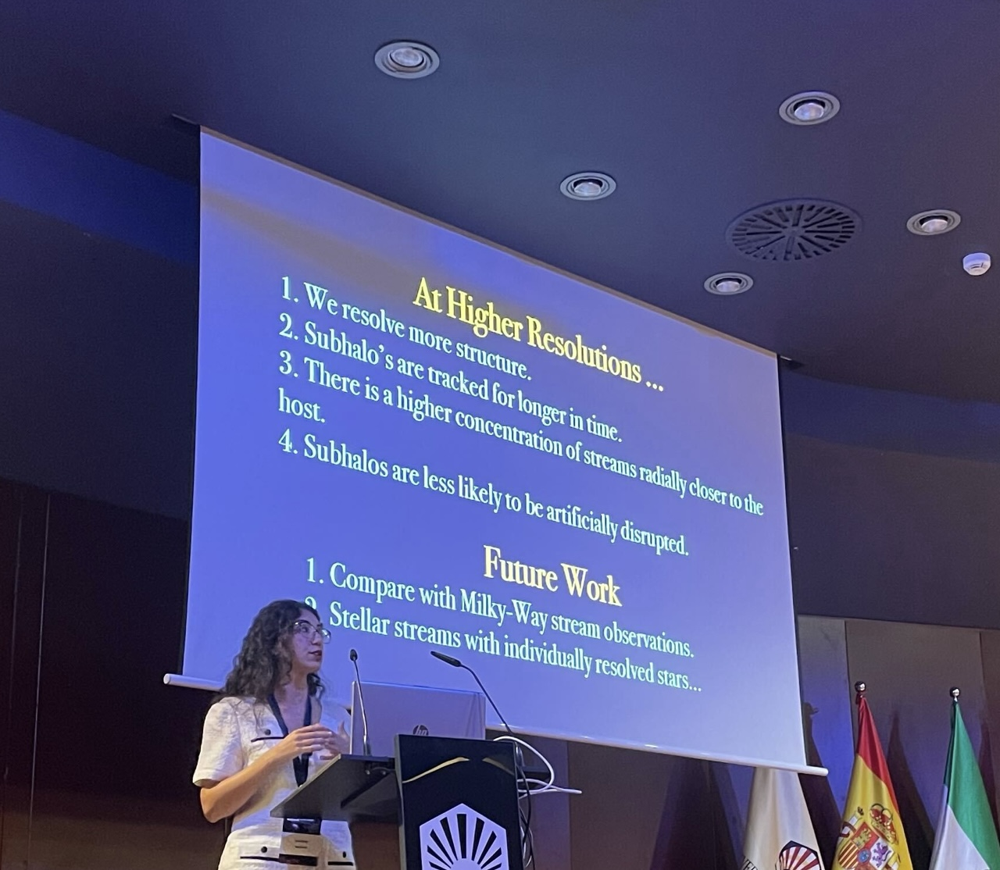

Population III Stars
Studying the formation, feedback, multiplicity, and initial mass function of the first generation of stars.
Learn more →ASTROPHYSICS
PhD Student in Astrophysics at Caltech
I study the formation of the first stars and galaxies and the dynamical evolution of low-mass stellar systems.

Hi, I'm Yasmine! I am a third-year Ph.D. student in theoretical astrophysics at the California Institute of Technology. My Ph.D. advisor is Phil Hopkins!
My research uses numerical simulations to study galaxy formation, stellar dynamics, and star formation across a wide range of cosmic environments. I am a member of both the FIRE (Feedback In Realistic Environments) and STARFORGE (STAR FORmation in Gaseous Environments) collaborations. My main research interests include Population III (Pop. III) stars, dwarf galaxies, and stellar streams, with a broader interest in understanding how small-scale star formation physics connects to the evolution of galaxies.
Studying the formation, feedback, multiplicity, and initial mass function of the first generation of stars.
Learn more →Following star formation and early stellar systems in their cosmological environments.
Learn more →Investigating the disruption of satellite galaxies and the formation of stellar streams in Milky Way-like galaxies.
Learn more →Interested in collaborating, discussing research, inviting me to speak, or just getting in touch? Send me a message below.